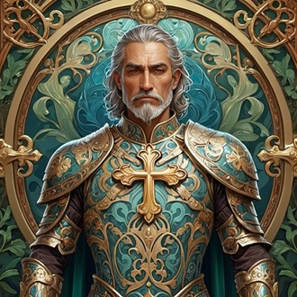
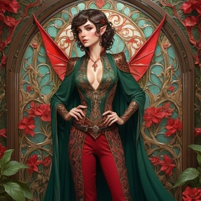
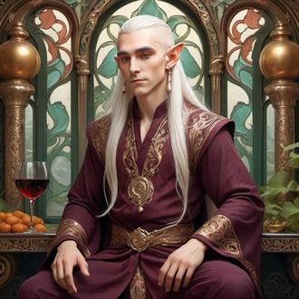
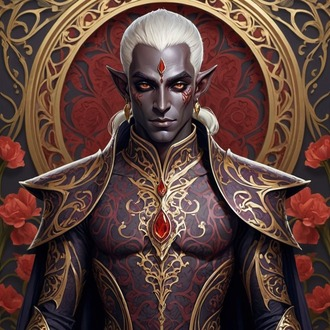
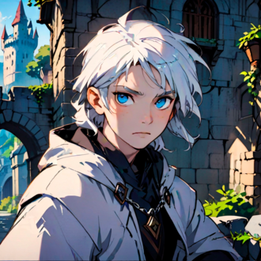
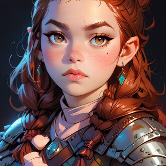
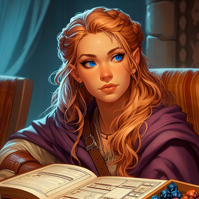
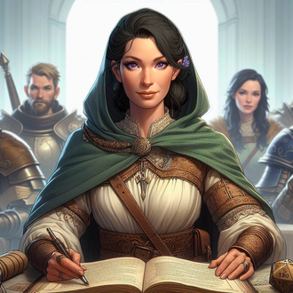

-
Carlos Germano
Descrição
Carlos é um paladino do Juramento do Mar Aberto, conhecido por sua bravura em inúmeras batalhas, especialmente na Guerra Abissal. Pai dedicado de duas filhas, Cad e Sarah, ele se sente responsável por proteger todo o seu grupo, garantindo que todos permaneçam seguros durante suas missões.
-
Cadrielfin
Descrição
Cad, uma elfa ladina, vive se metendo em encrencas devido à sua avareza. Raramente demonstra fraqueza e é a campeã da patrona Silath, que a salvou para evitar que ela perdesse o controle para um Devorador de Mentes.
-
Skool Elandryel
Descrição
Skool é um monge que aprendeu suas técnicas de luta no monastério Potentia Verbi, e lá desenvolveu seu estilo de luta bêbado. Por muitos anos viajou por diferentes lugares para procurar sua irmã enquanto trabalhava para a Rainha dos Elfos. Por fim, após sua irmã ser morta pelo dragão branco Turin, ele focou toda sua energia e força de vontade para cumprir a ordem da rainha.
-
Soveliss
Descrição
Sov, um elfo negro guerreiro, é o membro mais vingativo e sombrio do grupo. Após perder sua namorada em um ataque de um dragão de mithril e aço, ele se tornou implacável, tomando medidas extremas para vingar sua amada e derrotar seu maior inimigo, o Doppelganger.
-
Alba
Descrição
Alba é um humano mago com poderes que ele mesmo não compreende completamente. Ele se ofereceu ao patrono Aiacos para salvar Cad e fugiu de casa para se aventurar com o grupo, escondendo sua partida de sua mãe.
-
Thorja
Descrição
Thorja, uma anã clériga, foi salva pelo grupo e acabou se juntando a eles. Ela vê Sov como uma figura paterna e tem grande afeição por Alba. Além de suas habilidades de clériga, trabalha como ferreira.
-
Sarah
Descrição
Sarah, uma humana clériga, é a filha perdida de Carlos. Após encontrar seu pai, decidiu nunca mais se afastar dele. Especialista em medicina, ela salvou o grupo de situações de morte inúmeras vezes.
-
Dalia
Descrição
Dalia, uma guerreira humana forte, perdeu seu esposo muito cedo. Mãe de Alba, ela se afastou do grupo para criar seu filho e se tornou taverneira. No entanto, precisou retornar à vida de aventura para buscar Alba após sua fuga.